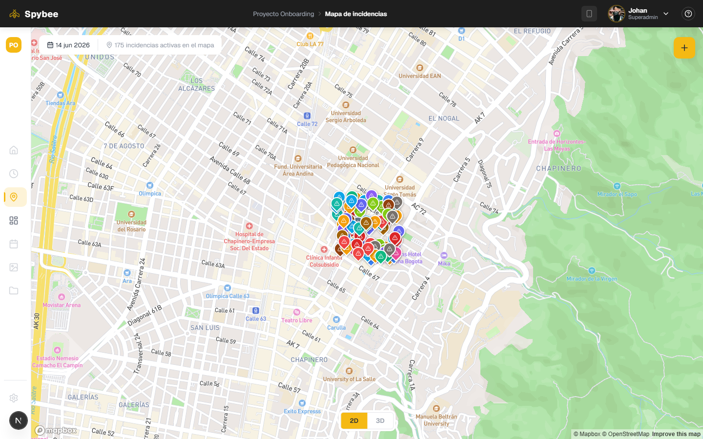
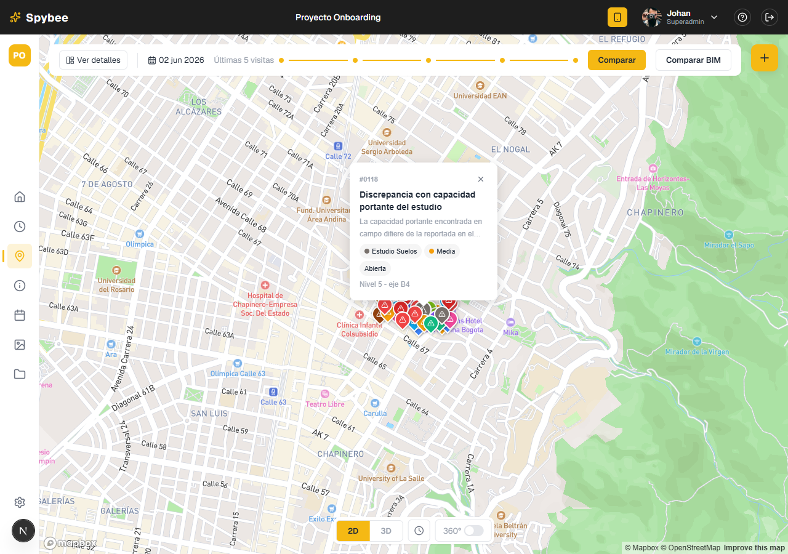
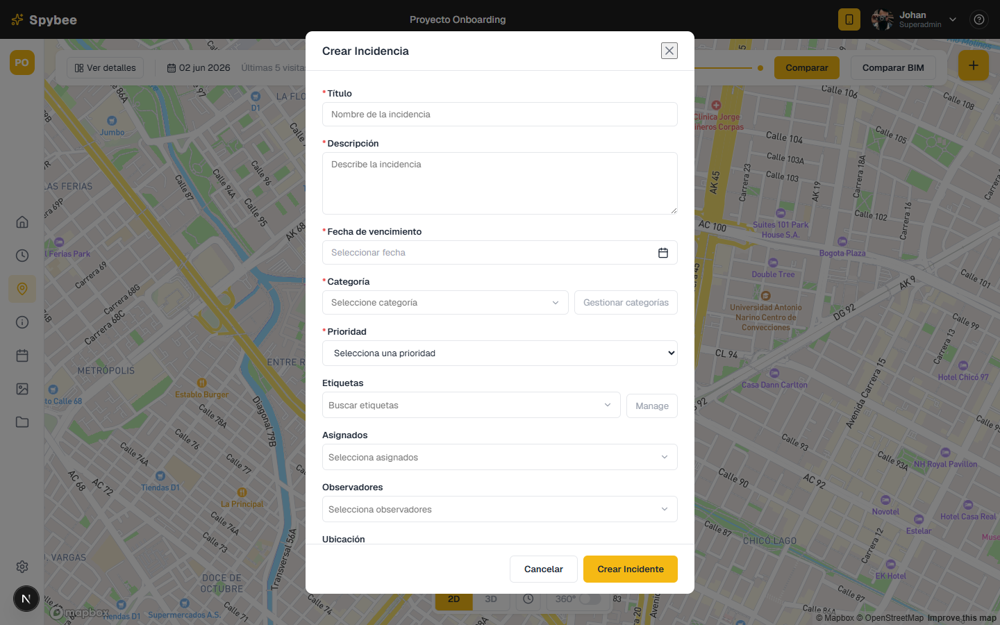
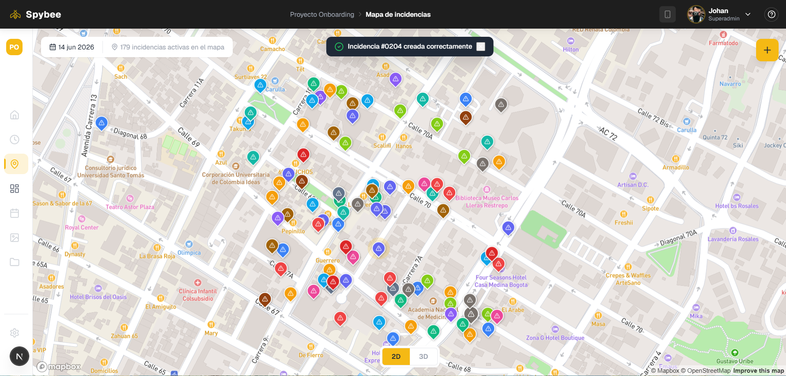
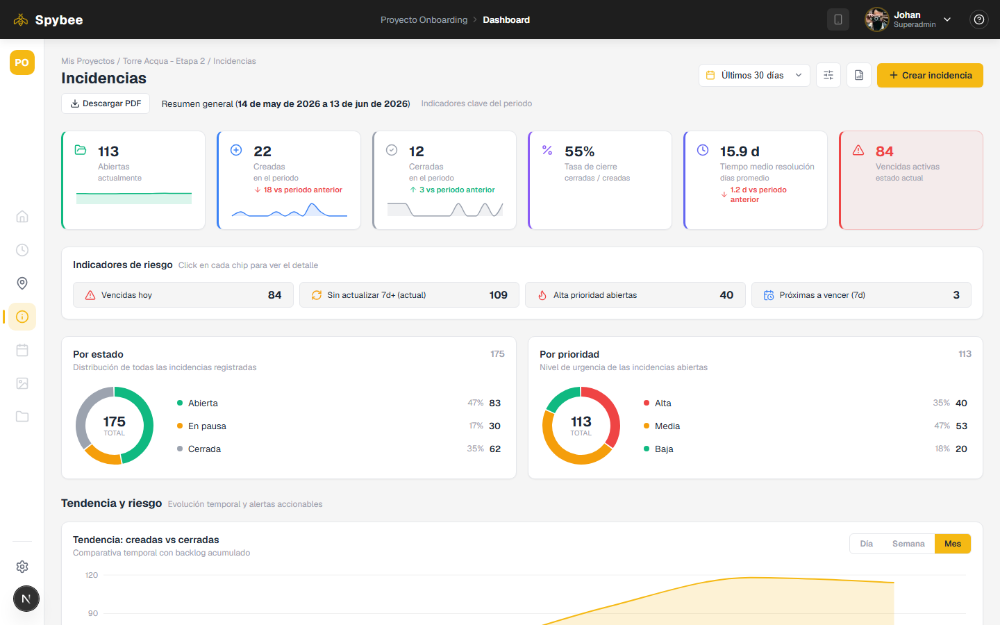
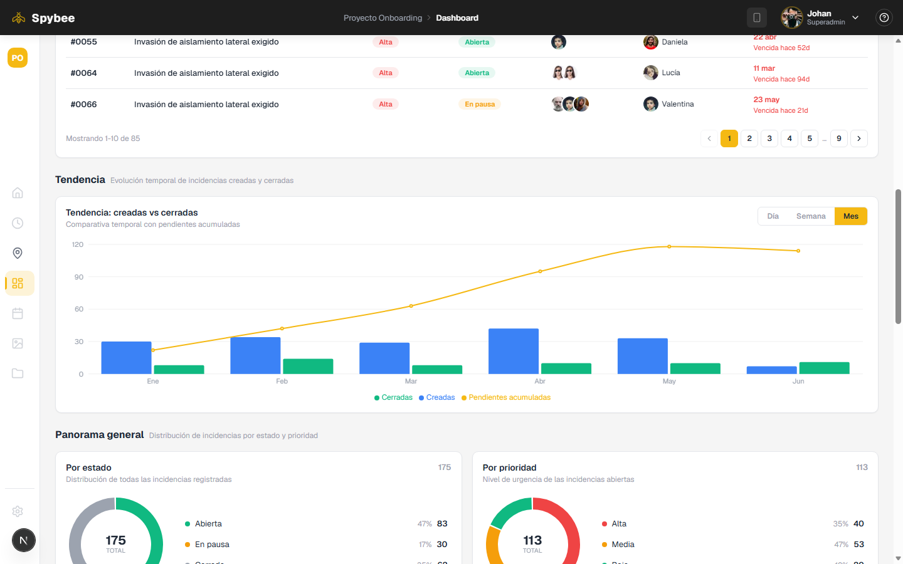
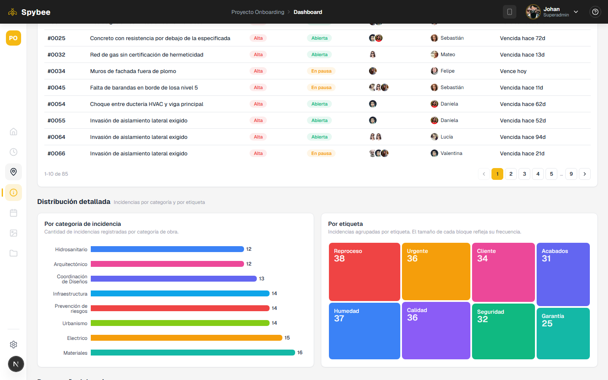
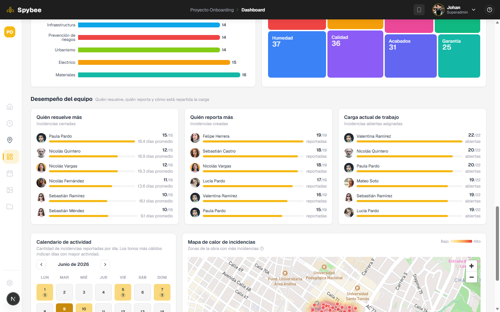
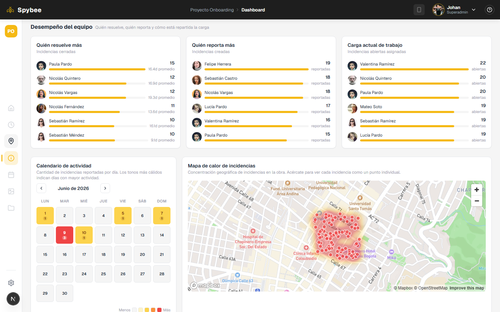
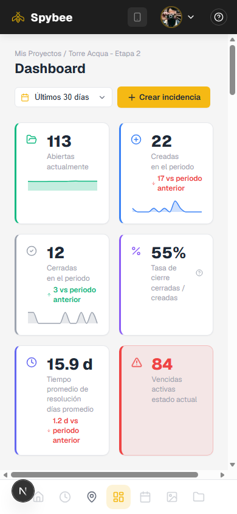

Toda la app trabaja sobre un dataset mock cargado una sola vez. Crear una
incidencia la antepone al array en memoria: es lo más simple que cumple
"se ve reflejada al instante" sin montar un backend real. La sesión persiste
con persist para sobrevivir a un refresh.
El componente de mapa es de presentación pura: recibe marcadores, popup y contenido como props. Se reutiliza tanto en la vista principal como en el selector de ubicación del formulario, sin duplicar configuración de Mapbox.
Todos los cálculos del dashboard (conteos, tendencia, incidencias críticas, rankings de equipo, comparación entre periodos) son funciones puras sobre el array de incidencias. Los componentes solo renderizan.
En vez de marcar como crítica cualquier incidencia de alta prioridad, la tabla muestra solo las vencidas o que vencen en los próximos 3 días: lo que realmente requiere atención inmediata.
Cada componente tiene su propio módulo de estilos, pero todos comparten la misma paleta, espaciados, radios y breakpoints definidos en un único archivo de variables, sin necesidad de un framework de UI completo.
Registro y "olvidé mi contraseña" tienen UI completa y funcional en cuanto a flujo y validaciones, pero son demostrativos: el login real valida contra un único usuario fijo, sin backend de autenticación.
Spybee — Mapa de incidencias & Dashboard